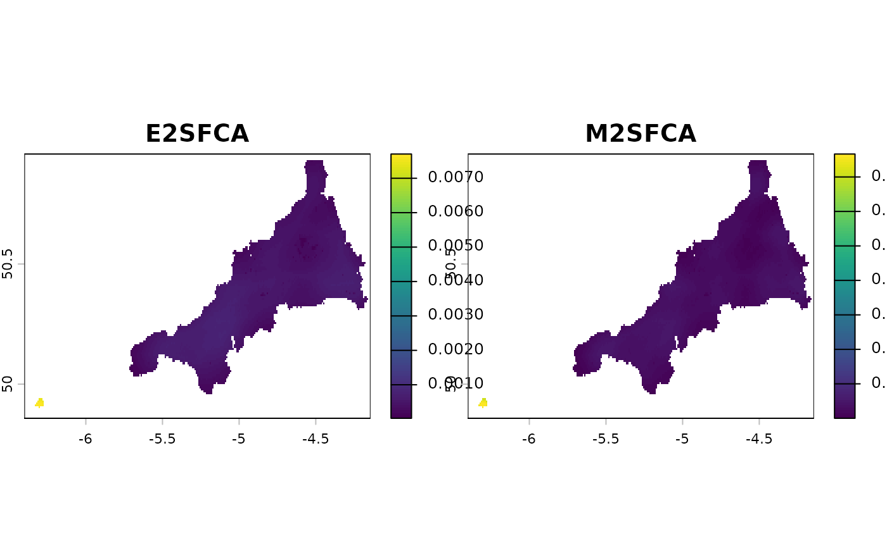
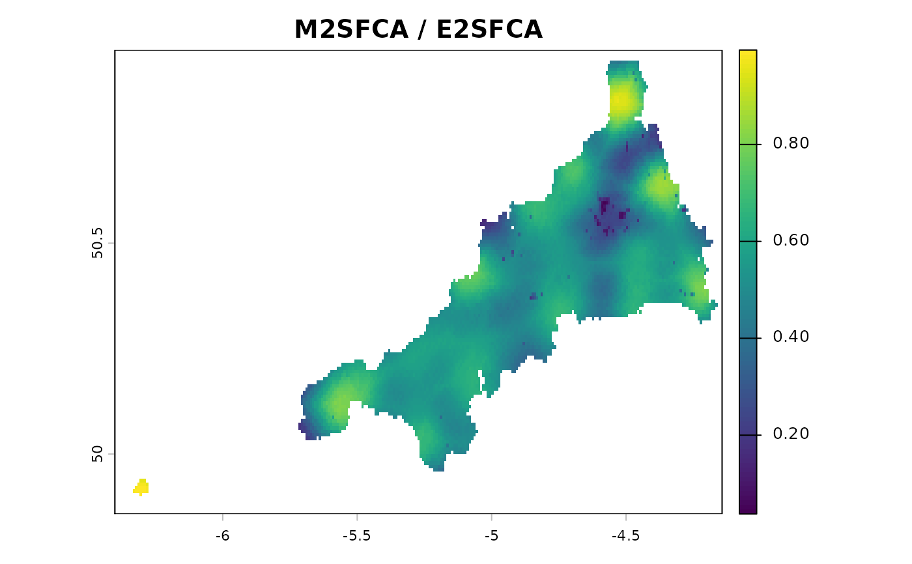

Calculate Modified Two-Step Floating Catchment Area (M2SFCA) accessibility scores
Source:R/03-spax_e2sfca.R
spax_m2sfca.RdImplements the Modified Two-Step Floating Catchment Area (M2SFCA) method
(Delamater, 2013). M2SFCA is identical to spax_e2sfca() in step 1, but in
step 2 the supply-to-demand ratios are weighted by the squared distance
decay. This discounts accessibility in sub-optimally configured systems –
where demand and supply are both far apart yet still within the catchment –
which standard 2SFCA/E2SFCA cannot distinguish.
Usage
spax_m2sfca(
demand,
supply,
distance,
decay_params = list(method = "gaussian", sigma = 30),
demand_normalize = "identity",
id_col = NULL,
supply_cols = NULL,
indicator_names = NULL,
snap = FALSE
)Arguments
- demand
SpatRaster representing spatial distribution of demand, or a named list of single-layer SpatRasters, one per demand group (see "Demand groups"). A multi-layer SpatRaster is refused. Demand must be finite and nonnegative (use NA for unknown) unless
snap = TRUE, which ignores other cells.- supply
vector, matrix, or data.frame containing supply capacity values
- distance
SpatRaster stack of travel times/distances to facilities. With demand groups, either one stack shared by every group or a list of stacks named by the groups (for example one per travel mode); the stacks of all groups must name the same facilities in the same order and have the same geometry (reorder with
x[[names(first)]]).- decay_params
List of parameters for decay function (with demand groups, one list shared by every group, or a list of such lists named by the groups):
method: "gaussian", "exponential", "power" or "binary", a custom decay function, or a kernel declared with
decay_kernel. Weights must be finite where the distance is finite, so power decay needs a positive minimum distancesigma: decay parameter controlling the rate of distance decay
Additional parameters passed to custom decay functions
- demand_normalize
Character specifying normalization method:
"identity": No normalization (original weights)
"standard": Weights sum to 1 (prevents demand inflation)
"semi": Normalize only when sum > 1 (prevents deflation)
- id_col
Character; column name for facility IDs if supply is a data.frame
- supply_cols
Character vector; names of supply columns if supply is a data.frame
- indicator_names
Character vector; custom names for output accessibility layers
- snap
Logical; if TRUE enable fast computation mode (default = FALSE)
Value
A spax object (see spax_e2sfca()); type is "M2SFCA".
Details
Step 1 (unchanged from E2SFCA): \(R_j = S_j / \sum_i P_i W(d_{ij})\).
Step 2 (modified): \(A_i = \sum_j R_j \, W(d_{ij})^2\).
M2SFCA is not a separate engine here: it is the shared FCA recipe with the
access-side kernel squared. It is exactly equivalent to
compute_access(demand, supply, W, W^2).
Demand groups
Give demand as a named list of single-layer rasters (for example age
bands) to let several groups compete for the same facilities. The names are
the group IDs: unique, non-empty, not "all" and without a .; all rasters
need the same geometry. A multi-layer raster is not taken as groups.
Step 1 sums, over all groups, the demand that reaches each facility, with
the demand weights of each group; step 2 gives each group its own
accessibility from the shared ratios, with its own weights. The result has
one layer per group, and an overall layer <measure>.all: the average of
the group scores weighted by the demand of the cell. A group with demand in
a cell that its travel cannot reach counts with accessibility 0 in the
overall layer; the overall layer is NA where any group's demand is missing
or the total demand is 0. With one group the group layer equals the
ungrouped result.
decay_params and distance (and selection_params of
spax_3sfca() and spax_huff2sfca(), threshold of spax_2sfca()) are
each either shared by every group or given per group. An argument is per
group when it is a list (for threshold, a named numeric vector) whose
names are the group IDs, in any order; names that match only some of the
groups are refused. Any other value is shared and checked as for one
group. Pass a shared distance as one object, so that it is read once. A
plain-function decay builds a whole in-memory weight raster for each group.
demand_normalize, indicator_names, id_col, supply_cols and the
attractiveness of spax_huff2sfca() are shared.
References
Delamater, P. L. (2013). Spatial accessibility in suboptimally configured health care systems: A modified two-step floating catchment area (M2SFCA) metric. Health & Place, 24, 30-43. https://doi.org/10.1016/j.healthplace.2013.07.012
Examples
library(terra)
library(sf)
# Cornwall population grid and travel time to each GP practice
pop_rast <- read_spax_example("cornwall_pop.tif")
travel <- read_spax_example("cornwall_gp_travel.tif")
gp <- cornwall_gp |> st_drop_geometry()
# M2SFCA with Gaussian decay
result <- spax_m2sfca(
demand = pop_rast,
supply = gp,
distance = travel,
decay_params = list(method = "gaussian", sigma = 10),
id_col = "practice",
supply_cols = "gp_fte_extg"
)
result
#> <spax access> M2SFCA, 1 layer on 132 x 271 cells
#>
#> Spatial Properties:
#> - Resolution: 0.00833333 x 0.00833333
#> - Dimensions: 132 x 271
#>
#> Measures: 1
#> - gp_fte_extg
#>
#> Facilities: 55
#>
#> Parameters:
#> - Decay function: gaussian (sigma = 10)
#> - Demand normalization: identity
# E2SFCA with the same decay, for comparison
result_e2 <- spax_e2sfca(
demand = pop_rast,
supply = gp,
distance = travel,
decay_params = list(method = "gaussian", sigma = 10),
id_col = "practice",
supply_cols = "gp_fte_extg"
)
plot(c(result_e2$accessibility, result$accessibility),
main = c("E2SFCA", "M2SFCA")
)

# The share of the E2SFCA score that M2SFCA keeps: the average decay weight
# of the practices in reach, low where they are far away
plot(result$accessibility / result_e2$accessibility,
main = "M2SFCA / E2SFCA"
)
